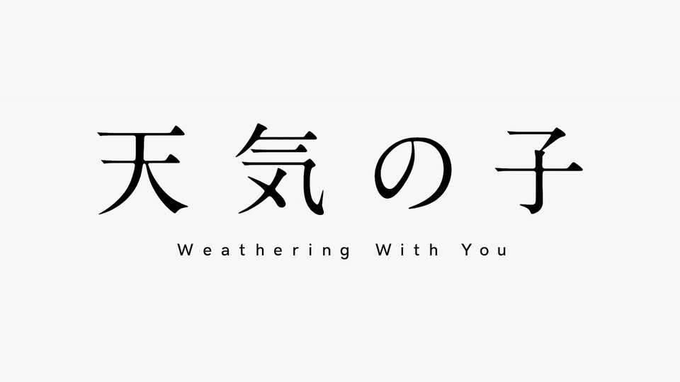

性格特点：阳菜有着温柔的性格，善于照顾人，在帆高困窘时，还为他送去食物。她虽然才15岁，但是看起来相当成熟，曾被顾客认为是大学生。阳菜直率、善良，在帆高一时冲动开枪的时候会毫不犹豫的大骂他，但是也会在帆高把手枪丢到后蹲在他旁边感谢他帮助
评价：阳菜是一个像天气般富于变化的女孩，但无论什么时候都要让人感到可爱，我抱着这种意识去演绎。”——森七菜 “即使阳菜已经失去了晴天女子的力量，她也继续祈祷着，真厉害啊。”——RADWIMPS “在我看来，阳菜反而是难度最大的角色。实际上，我是在声音录入之后才理解了这个角色。在那之前，我不知道她究竟是会被状况左右的女孩，还是拥有坚定意志的女孩。和帆高说话，她有点像姐姐，却也是一个普通的女孩子。”——居村健治
外貌: 一头黑色的头发，左右两边各自扎着一条马尾，穿着一件粉色的连衣裙和一件有连杉帽的白色无袖上衣，脖子上戴着母亲留下来的一条项链 。帆高来到她家中时，她身着一件黄色的无袖上衣和绿色的短裤，衣服中间一只白鸟的图案，图案上方有一条白色的系带。她和帆高为人祈祷晴天时穿着白色上衣和黑色短裤，脚上穿着白色靴子